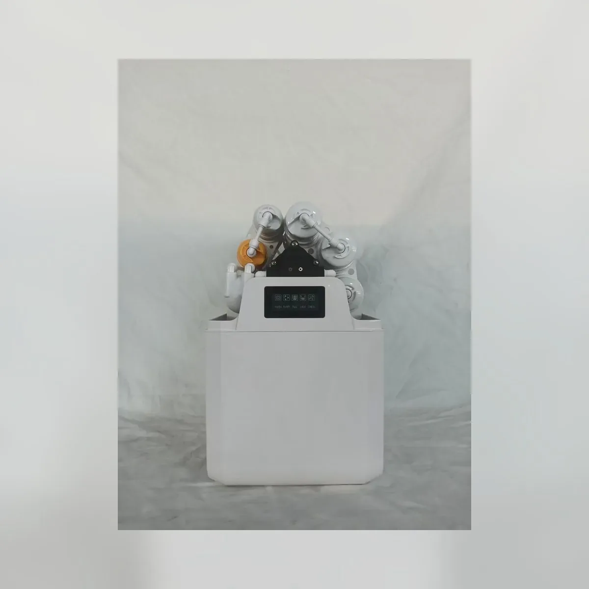
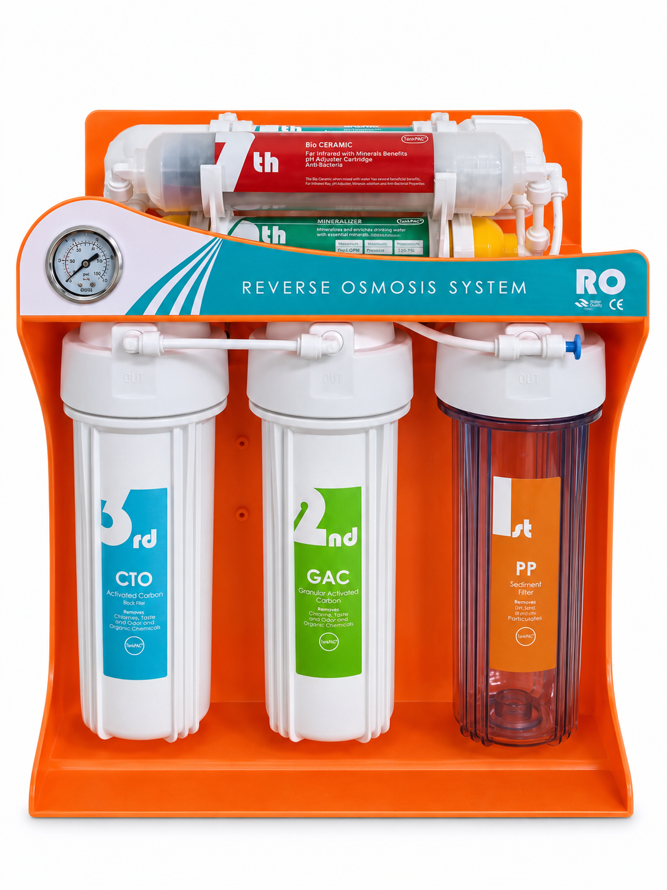
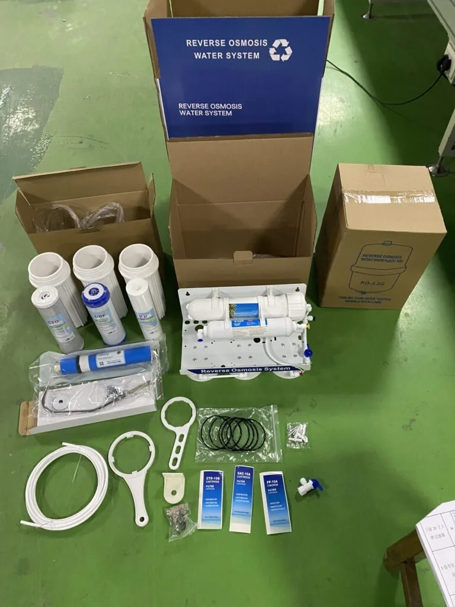

Osmoseur à réservoir sous pression intégré 100G/200G
Stockage dans un réservoir sous pression intégré.
Voir le produit
Choisissez une configuration à cinq, six ou sept étapes. Avant le devis, précisez la séquence de filtration, la capacité de la membrane, la pompe ou le réservoir, le montage et les caractéristiques de l’eau d’alimentation.
Les sept photos identifient des montages et non des références fabricant. Confirmez la séquence de filtration, la capacité de la membrane et les composants livrés. Les illustrations sur fond blanc sont retouchées. Les étiquettes visibles ne constituent pas une preuve de caractéristiques ou de certification.
Définissez le système complet avant ses consommables. Choisissez le montage, les manomètres et le marquage en fonction de la membrane et de l’eau à traiter.
Cette fiche concerne l’osmoseur complet. Le débit et les limites de fonctionnement dépendent de sa configuration et doivent être validés sur sa fiche technique.
| Paramètre | Caractéristique |
|---|---|
| Type de produit | Osmoseur personnalisable à 5, 6 ou 7 étapes |
| Matériaux | Porte-filtres en plastique de qualité alimentaire, support plastique ou métallique, manomètre et raccords rapides en option |
| Dimensions | Selon le nombre d’étapes, le support, la platine et la configuration pompe ou réservoir |
| Seuil de filtration | Cartouche à sédiments PP généralement de 1 ou 5 µm. Les étapes à charbon et de finition dépendent des médias retenus. |
| Débit | Selon la membrane, la pompe, la pression d’entrée et le cahier des charges OEM |
| Applications | Osmoseurs, fontaines à eau, préfiltration, traitement commercial et marché des cartouches de remplacement |
| OEM/ODM | Logo, étiquettes, emballage, couleur du support, façade, étapes de filtration, manomètre et carton |
| Quantité minimale | À confirmer selon la configuration, le conditionnement, les fichiers graphiques et la personnalisation |
| Étapes de filtration | Configurations à 5, 6 ou 7 étapes : sédiments PP, charbon GAC/UDF, bloc CTO, membrane d’osmose inverse et post-filtration T33, minérale, alcaline, céramique ou spécifique. |
|---|---|
| Manomètres | Aucun, un ou deux manomètres. L’implantation dépend de la façade et du support. |
| Support et platine arrière | Support plastique ou coloré, platine simple, façade avec afficheur ou montage spécifique. |
| Marque du distributeur | Marquage de la façade, des cartouches, du manuel, de la boîte, du carton d’expédition et des jeux de remplacement. |
| Emballage et expédition | Protection intérieure, boîte imprimée ou carton brun, carton de regroupement, palettisation et marquage export sur devis pour les commandes en conteneur ou groupées. |
Oui. Il dépend de la qualité d’eau visée, du prix cible, du programme de remplacement des cartouches et du marché desservi.
Oui. Les versions sans manomètre, à un ou deux manomètres sont proposées sur devis selon les besoins de surveillance et le support choisi.
Oui. Pour les projets OEM/ODM confirmés, le support, la façade et les étiquettes sont personnalisables. Les couleurs courantes sont le blanc, l’orange, le vert et le bleu.
Oui. Cette variante peut être étudiée lorsque le poids, le coût ou la facilité de pose sont prioritaires pour votre marché.
Sédiments PP, charbon actif GAC/UDF, bloc CTO, membrane d’osmose inverse et post-filtre T33, minéral, alcalin, céramique ou spécifique.
Envoyez le logo, les maquettes, les couleurs, les exigences d’emballage, la langue du manuel, la quantité et le port de destination. Yuchen Water peut aider à préparer les étiquettes et cartons.
Oui. Les jeux compatibles peuvent accompagner les osmoseurs ou être livrés séparément pour le service après-vente.

Stockage dans un réservoir sous pression intégré.
Voir le produit

Réduction des solides dissous, des sels et des métaux lourds selon les conditions de service.
Voir le produitIndiquez la séquence de filtration, les manomètres, le support ou la platine, la quantité, le marquage et le port de destination.